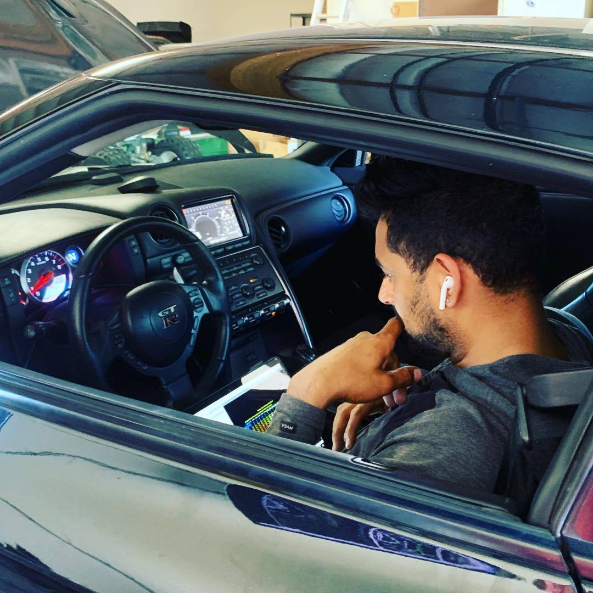

Meet Our Protuner - Gary Bains
Gary's passion for cars developed in his early teens at the dawn of JDM culture in the 90s, all before Fast and Furious and Youtube tutorials were around; he had to learn cars by doing with minimal assistance and even after costly repairs, heart dropping moments and a scolding from parents at times, his love for cars continued to grow. Soon after, Gary started street tuning in his neighborhood at the age of __ and has not stopped working on cars since.
Gary founded Bains Tuning in ____ and has tuned thousands of cars from all over the continent including the Bay Area, SoCal, Nevada, East Coast, Canada, Alaska, etc. first timers, as well as cars with previous tuning. Having personally owned over 30 cars in his lifetime, his goal as a tuner is not only to provide excellent customer serivce and quality tuning but also educate fellow car enthusiasts as himself to make the most of their journey.
- 10+ years of experience
- Only COBB certified protuner in SF Bay area
- Double bachelor's in Accounting & International Business Relations (Sacrament State University)